A 120-point thesis submitted to the Victoria University of Wellington in partial fulfilment of the requirements for the degree of Master of Architecture (Professional).
Victoria University of Wellington School of Architecture.
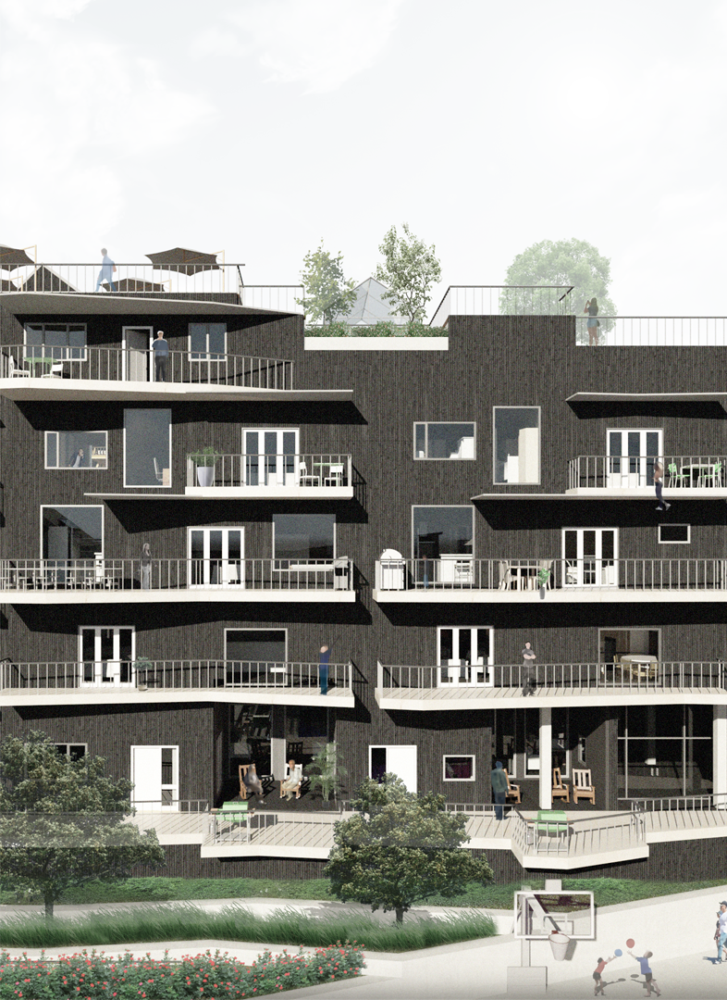New Zealand is a progressively ethnic diverse yet individualistic country. The population is constantly increasing and among this is cohort of people belonging to collectivist cultures, with forecasts of these cultures such as Asians said to be rising 120 percent to 600,000 by 2021. The current social patterns in individualistic societies such as New Zealand suggest that the dominant style of living is singular in nature, meaning small clusters of individuals. However, in collectivist societies people live in a more integrated manner with others and their surroundings, contributing to an arguably healthier lifestyle and greater acceptance. This shift in the identity of New Zealand demands for a change in the way that different cultures can live with each other, to better reflect the needs of these different groups while increasing the social aspects within them.
This thesis investigates how medium density architecture can address the problem of housing different cultures within the same space, along with finding ways to increase the sociability among dwellers in New Zealand. Adopting Hofstede’s cultural dimensions of individualism and collectivism to aid in designing for different societies, Newtown in Wellington was used as testing grounds to identify ways that people can live integrated among themselves as well as different groups and styles of living, forming a more ‘cohesive’ culture overall. Coupling conventional medium density housing techniques and specialized ‘social’ design in a semi-urban setting; this thesis aimed to find ways to create a model that allows for facilitating the togetherness of strangers without forcing them to fully assimilate. The research challenges how contemporary architecture can create an environment where people of different ages or backgrounds can be housed together to form a ‘living community’. It finds that flexible inclusive design that adapts to the existing fabric and allows for integration with the wider community as well as the examined groups can offer a successful model for the togetherness of strangers.
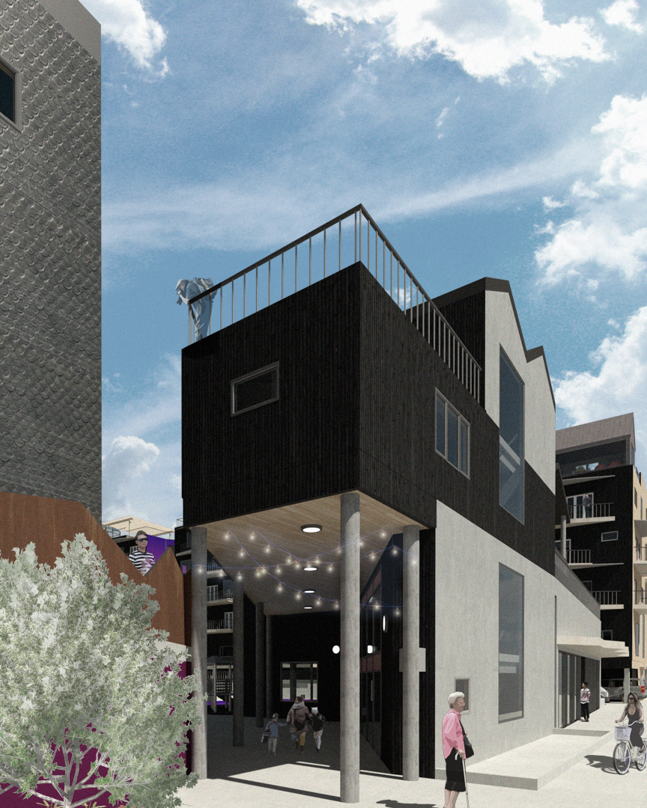In centres such as Wellington and other large New Zealand cities, different cultures and living styles are reasonably evident and the density allows for some interaction to be had. However, communities and the architecture that it embeds often does not do well to support the acceptance of different groups (Mullins, Western, & Broadbent, 2001). In suburban contexts the typology of detached dwellings take precedent, so while we see a slight mix of different cultures, there is no place for them to interact or ‘accidentally’ meet. There is a lack of diversity on two scales, firstly on the larger scale where people who don’t fit in get pushed outward and on the smaller scale where there is little variety even within a building in the city. The gap in diversity means that there are plenty of opportunities lost for a variety of people to come together which leaves opportunity for a middle ground to be established.
Currently – much like many places in New Zealand - there is a shortage of homes in Wellington. The Wellington City Council reports that in addition to the deficit of housing already present, there are about 30,000 new homes required by 2043 to meet the city’s needs (Wellington City Council, 2018b). Housing facilities that form a ‘community’ feel within a suburb are lacking, furthering the divide between ‘individualistic’ and ‘collectivist’ societies in New Zealand. This thesis looks to investigate a new housing typology could bring together these different groups, further enhancing the life of these people and all those who come in contact with them. This revised model will look at conventional techniques from ‘collectivist’ societies and borrow their attributes so they can be implemented into New Zealand to better prepare for the further diversification of cultures yet to come.
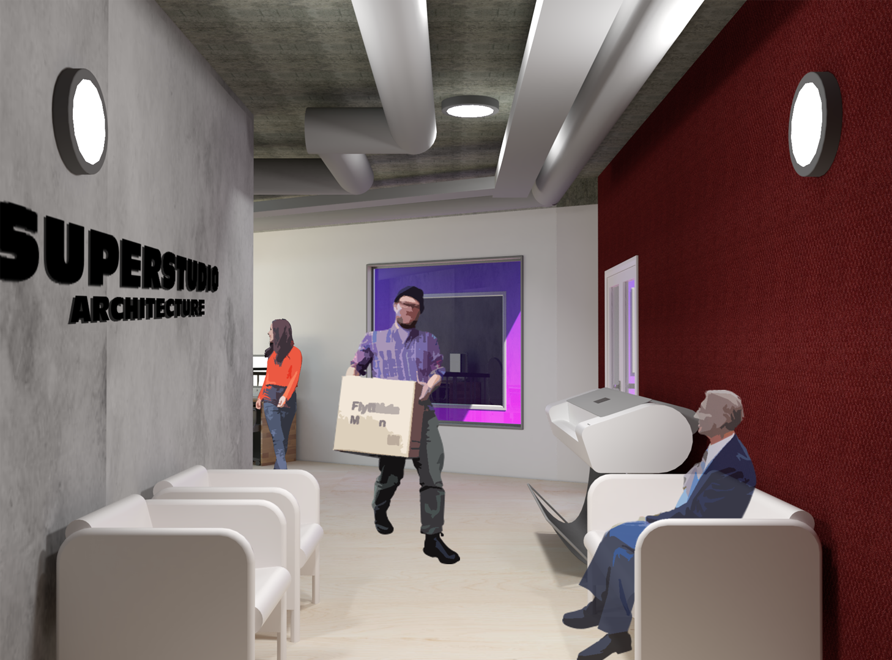Methodology
This thesis is generated by a design-led process that is divided into three design phases; first, research ‘for’ design and the second and third, research ‘through’ design. Due to this thesis addressing a topic that is prevalent locally as well as internationally, relevant data is extracted from similar housing, culture and integration concerns internationally to properly understand the problem being examined.
An interdisciplinary review of the literature was carried out to find different architectural theories as well as the importance of flexible options, the significance of social interaction and the challenges of designing a medium density housing facility for different cultures. Key theorists that address some of the objectives set out were examined and from this stage 6 design performance criteria were formed, which were then used to critique and analyse a relevant selection of related work as well as to evaluate against in the 3 design phases that followed. The site of Newtown was then chosen and critically analysed to understand the context and problems that are faced with designing on it. Following on from site analysis, an extensive program analysis was considered to understand the scope of the project, as well as the importance of the needs this specific clientele has.
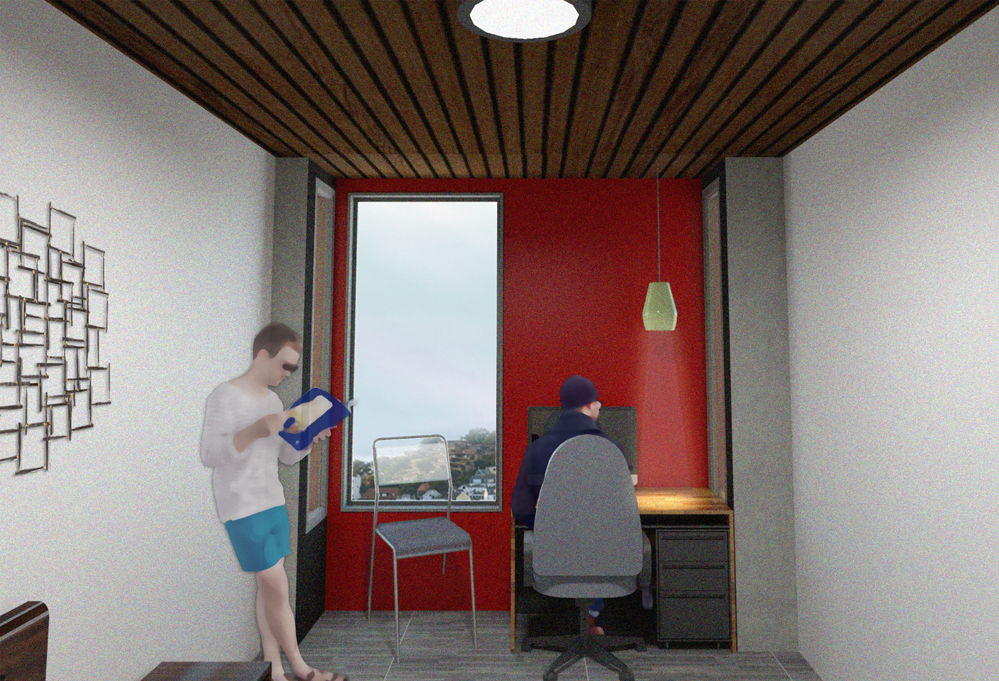Designing for Different Groups
In order to design housing that is enjoyed by many different groups, the architecture created must be inclusive in the way it is planned and reflect the needs of its users (Tucny, 2011). Inclusive design is defined as ‘an environment which can be accessed and used by as many people as possible, regardless of age, gender or ability (Inclusive Design Hub, 2017). Given the broad nature of this topic, this inclusiveness should be designed for on two scales; one with the design itself and the other with the wider community in mind. Urban theorist Gerald Frug comments that the duty of cities on a whole should be to foster ‘inclusiveness’, stating that the role of these centres should be ‘designed to deal with difference’ (Frug, 1999). Political theorist Iris Young further elaborates on this same idea, suggesting four key values along the lines of ‘variety’, ‘eroticism’, ‘publicity’ and ‘social difference without exclusion’ which an inclusive environment should aim to have (Young, 1990). On a smaller scale, researchers in the UK advise that similar principles need to be adopted into the design that helps deal with this “difference”.
The United Kingdom’s Commission for Architecture and the Built Environment suggest that in order for a design to be usable by different groups of people, it should have qualities of “inclusiveness, responsiveness, flexibility, convenience, accommodation, welcoming and realistic” (Fletcher, 2006). Designing on these two scales is therefore important, and with the help of these principles will give the final outcome a balance that has the potential to be adopted into the New Zealand living context.
Emily Talen, Professor of Geographical Sciences and Urban Planning at Arizona State University in the United States speaks of how architecture has the potential to enable social diversity with the use of two significant design strategies; mix and connection. This method of the ‘mix’ is divided into two components by Talen. The first, housing options that provide a variety of living options which facilitate ‘social mobility’ and the second, a mix of facilities and services, uch as a mix of small business or public amenities that are carefully designed to cater for both the individuals and wider community (Talen, 2012). In addition to a mix, Talen’s subsequent design principle is connection. Talen suggests that a successful connection in a design is one that provides two types of spaces. Firstly, an “identity space” and secondly, a “collective space” (Talen, 2012). An “identity space” refers to an area that focuses on cumulating people of similar interests, so they have a space in common that represents their needs and requirements. The other, “collective space”, refers to a space that is designed for all, where different people can interact and communicate, allowing diversification to occur (Talen, 2012).
Cultural theorist Homi K Bhabha offers the concept of hybridity as one way to bridge the gap in interaction between disparate clusters, saying that this concept identifies a state of ‘constant alteration’, continually reshaping and reimagining the surroundings (Hernandez, 2010). Bhabha states that cultural rudiments generally tend to transform due to the influence of neighbouring cultures, altering to accommodate each other as they ‘hybridize’ (Hernandez, 2010). Although complete hybridization is not what is desired within this housing model, the facilitation of different groups in the same space can provide opportunities or engaging with and accepting various different cultures.
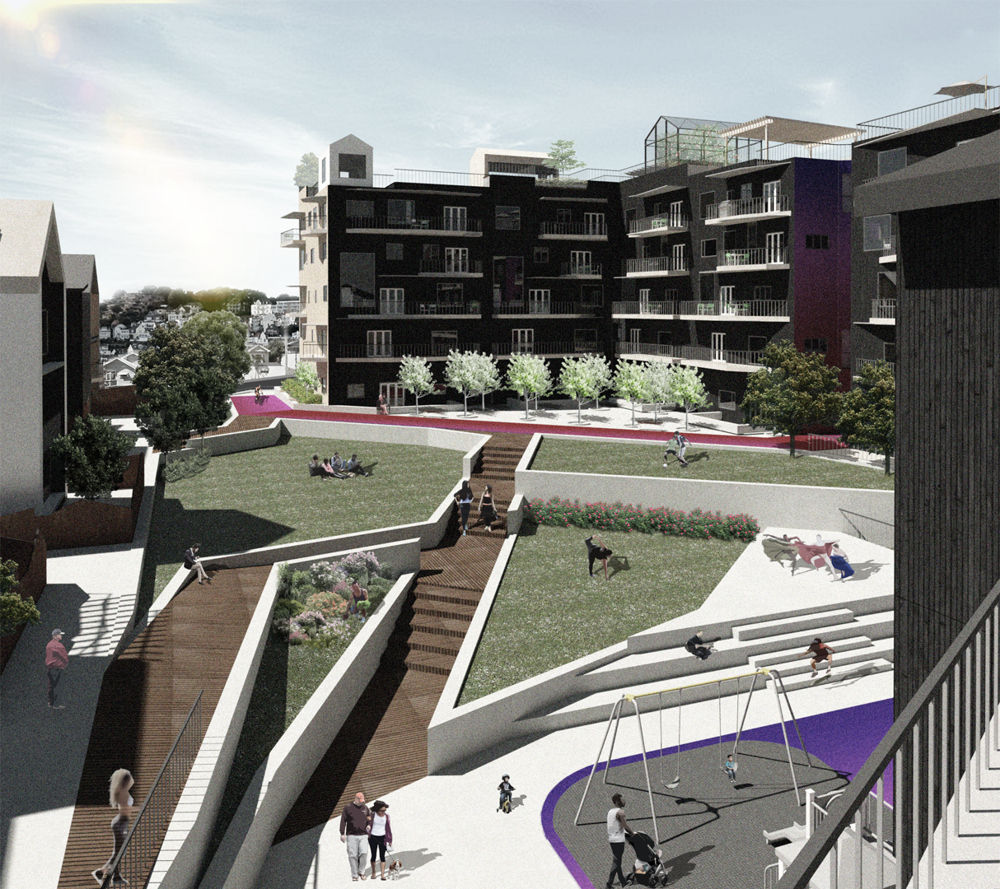Medium Density in NZ
While there is evidence of successful medium density housing in New Zealand, there is little which accommodates the needs of different cultural models of living (Housing New Zealand, 2018).
Research on Medium density housing in Wellington reports that despite the normal three bedroom house still being popular, smaller, two bedroom houses are becoming more regular in new medium density developments with singles or couples being accommodated well (Gray Partners Limited, 2016). However, this model does not seem to suit majority of the families that live in these locations and therefore these groups are often made to look in places further from city centres and in a detached house environment (CityScope Consultants & Curious Research, 2011). This unofficial barrier of suitability to what is being built creates bubbles of no-go areas and therefore segregation in communities.
Medium density housing in New Zealand although being on the rise, is also described as often ‘lacking in character’ (CityScope Consultants & Curious Research, 2011). To achieve medium density housing that is successful in not only its character but also the way that it serves the people it houses, many design guides were consulted to find key characteristics that should be considered.
The Auckland Design Manual indicates that a successful medium density development in general considers: a public front that faces the street, private open space away from the street, driveways and carparks that do not impact the quality of the street front and service areas that are screened from the public (Auckland City Council, 2017). In addition to these, Wellington City Council suggest that these developments should be affordable, have good access to community facilities, schools and open spaces, have good access to public transport networks and explore services and local employment (Wellington City Council, 2018a).
Further research into various different cultural housing guides reported on the detailed needs of these separate cultures, for example a pacific housing design guide curated by Housing New Zealand reports that multipurpose spaces and a flexible design are two of the most important features to consider when designing for pacific people (Housing New Zealand, 2002).
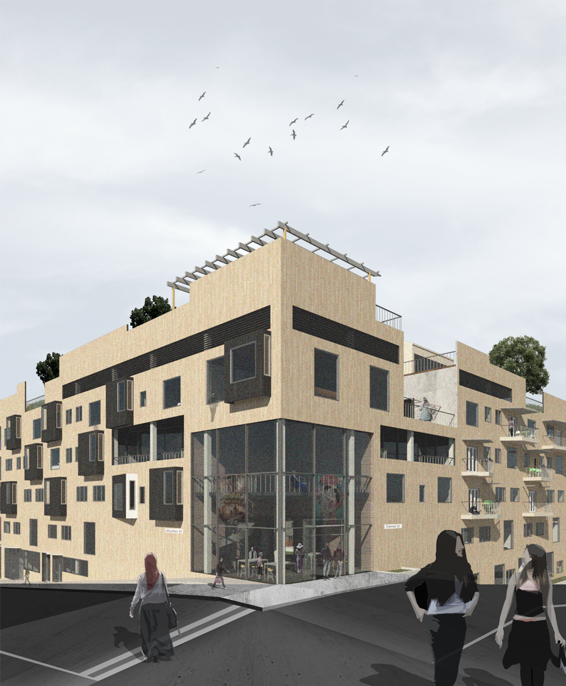Designing for Social Interactions
Social spaces, or the “third space” as described by Bhabha (Aparicio et al., 2010) are important features in any design that aims to foster the interaction of various different groups and ages. This “third space” – or group of spaces - has been added as a vital component to the design of this medium density housing project in order to allow for the togetherness of these cultures to take place. Research into local projects of medium density housing report that the spaces around these buildings are often left out, resulting in a lack of places of contact for residents (CityScope Consultants & Curious Research, 2011). In his book Life Between Buildings (2011), Jan Gehl states that “architects and planners can affect the possibilities for meeting, seeing, and hearing other people”, and therefore should aim to create an open space that is clearly visible by all, as “People are attracted to people. They gather with and move about with others and seek to place themselves near others” (Gehl, 2011). The use of ‘micro-publics’ – also known as semipublic spaces- in areas where contact between different cultures is desired is a strategy suggested by Ash Amin, Geography professor at the University of Cambridge. These settings can be made up of a various mix of activities where discussion and conversation becomes inevitable (Amin, 2002). The encouragement of the coming together of ‘strangers’ in these carefully designed environments allow them to participate in common activities that could then encourage the break-down of barriers and stereotypes. This will then provide these individuals with an opportunity to form their own “patterns of social interaction” (Amin, 2002).
Further emphasising the idea of social spaces urban theorist Jane Jacobs suggests that the four main design principles of a social space are; permeability, mixed use, density and natural surveillance (Jacobs, 1992). Permeability refers to providing users with the opportunity to intersect and connect, mixed use refers to strengthening the identity of place by housing a mix of residential and commercial buildings, density refers to quantity of these mixed uses and how the right level can bring people together and lastly natural surveillance, which refers to building a public space where the activities of different people can be observed creating a safe environment and a strong sense of community (Chantry, 2018).
Emily Talen however suggests that it would be naïve to consider that good design alone would create a ‘togetherness’ of a community, advising that rather than just aiming to design a space that has a sense of community, “the aim should instead be to increase the probability of this happening” (Talen, 1999). One way to increase this probability is to adopt the use of architectural concepts of cross-programming and dis-programming, as explained by architectural theorist Bernard Tschumi. Tschumi describes his concept of cross-programing and disprogramming as a scheme where “programme A contaminates programme B and B’s possible configuration (Tschumi, 2012). The concept of dis-programming is defined as the ability of one programme to inform the function and configuration of another’s (Tschumi, 2012). This dialogue between the two does not mean that one will define the other to be the same, but instead how one’s function and programme can be modified to allow for the other to be active in tandem. The concept of ‘cross-programming and disprogramming’ therefore directly relates to the idea of interaction among spaces. Tschumi also describes architecture to be both the built form and the experience within it, suggesting that this then should be merged together to create “unprecedented combinations” that can lead to more social interaction amongst the built form (Tschumi, 2012).
Additionally, Jane Jacobs also states that mixing forms a complex pool of use, by including facilities that complement each other by generating different activities at different times during the day. Therefore, by designing a mixed use development and providing different programmes for the variation of potential cultures, opportunity is created for interaction between the dwellers and visitors, enhancing the building of relationships between the several groups. This design technique although implemented in a physical way, has the potential to perform as an important source of well-being for individuals as well as the wider community (Cattell, Dines, Gesler, & Curtis, 2008).
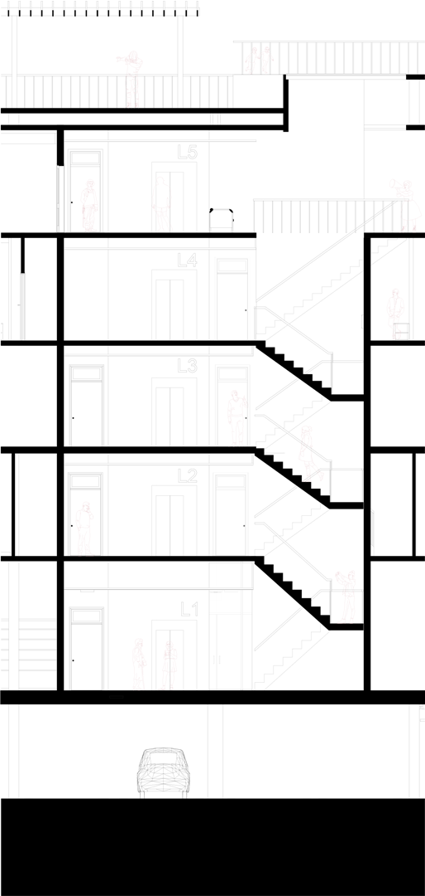Density
Density: is achieved in two forms in the development. The more physical way it is achieved is by the dwellings per hectare, where it goes from 26 dwellings p/h to 75. This starts to address the issues that the WCC have raised, addressing the fact that there are 21,000 new homes required in Wellington by 2043. Which means that this sort of model will not only could shorten that deliverable time but also will be able to do it in a third of the space. More importantly in this scheme however, density in urban design relates to the human perspective according to Urban theorist Jane Jacobs, meaning that more space can lead to support of a variety of cultures in the same space. Homi Bhabha also touches upon this, saying that basics of cultural acceptance is built over time as different cultures learn to live side by side.
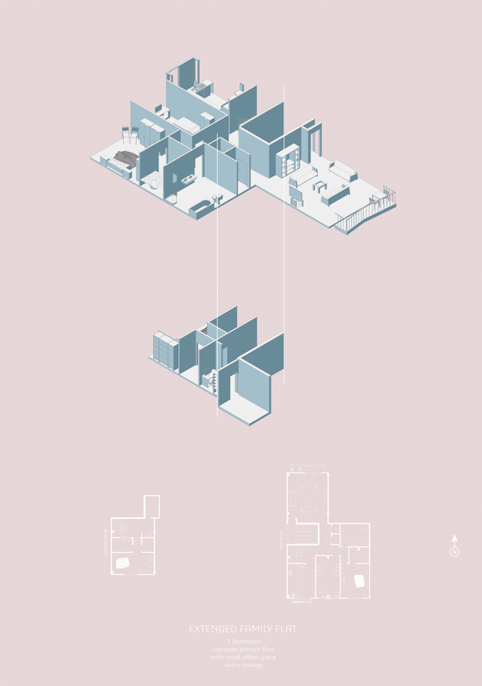 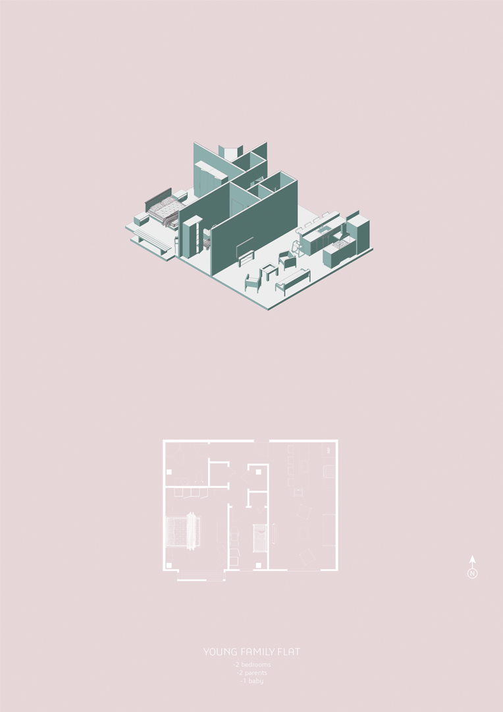Collective Style Living Options
Different living styles were created in order to house the many different cultures that are present in both Newtown and Wellington on a whole. Different sizes, configurations and layouts were explored in reference to the various housing guides consulted, to create diverse and flexible housing that can aims to be inclusive to all. For the collectivist block, 11 different scenarios were explored, which ranged from a solo flat to a family of 12 to see how this scheme might be able to provide shelter for these different groups in one collective space. Here it is shown how different cultures might be able to adapt to the same layout - given their specific needs.
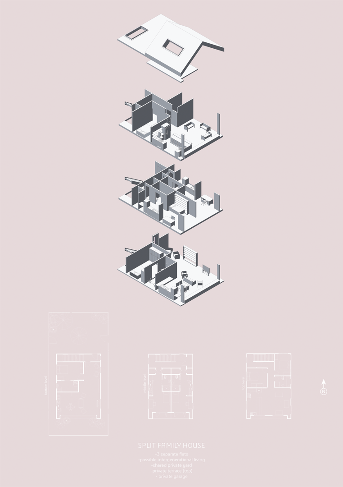 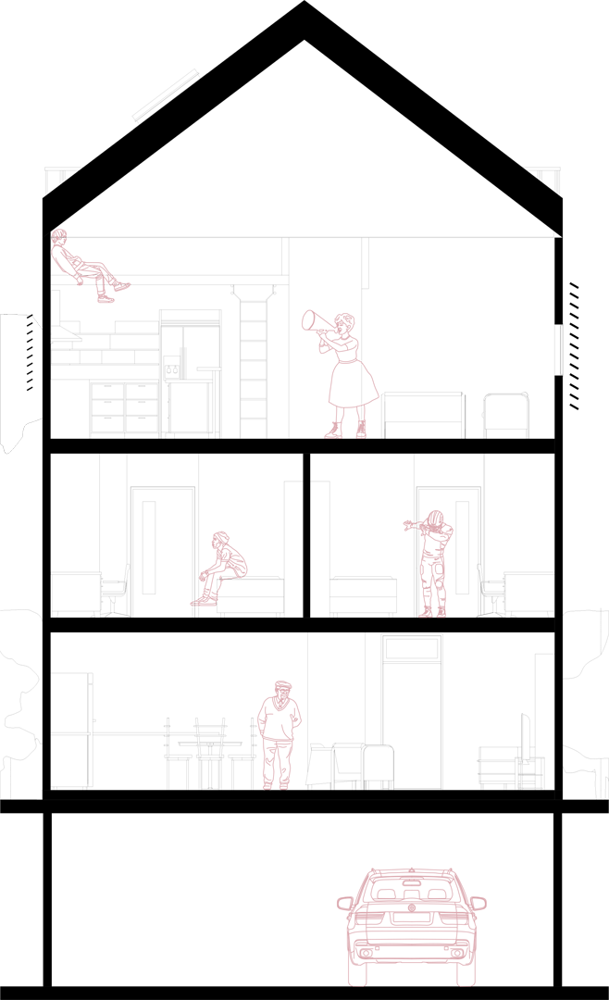Individual Style Living Options
For the individual style housing, options considered what these cultures most like within
their housing. Features of these are:
- Own back or front yard
- Entrances that do not face each other to increase privacy while leaving and arriving.
- Fences dividing the plots are kept to max 1.5m high to allow for contact but still
maintain privacy into houses
- Fences dividing the houses also allow space to stop and chat with your neighbour
when entering or leaving the property.
- Access from basement garages at two points in the development to increase
opportunity to bump into each other
- Private garages for each house (both single and double) for car and other storage.
- Bench and landscape area at garage stair access for opportunity to stop, sit and
chat.
- Entrances are recessed into the building to give the feel of security.
- Large lounge spaces – proportionate to the house type.
- Rooftop spaces either face the back of the site or the front to prevent direct view of
neighbour and allow for privacy in these spaces.
- All windows strategically placed so that they do not directly look into the
neighbouring house.